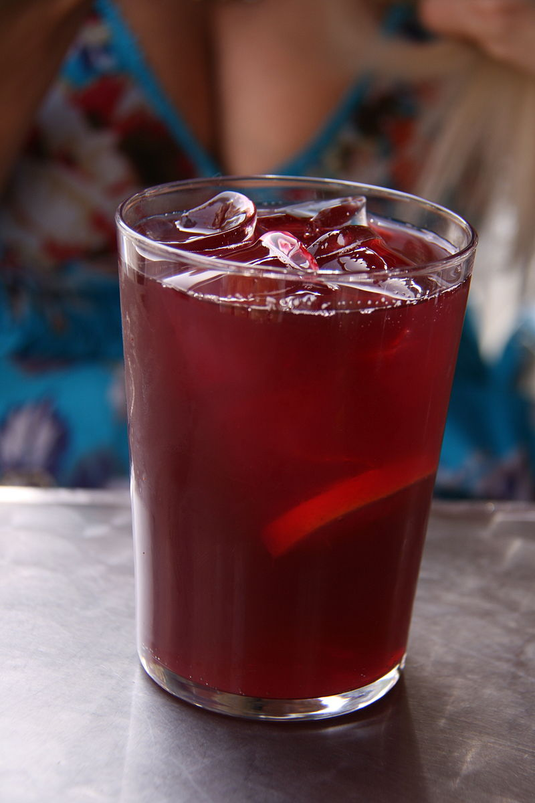

Tinto de verano

The most refreshing way to drink wine
Easy to make and absolutely delicious, you can't miss with this cool take on wine.
Ingredients
These are the portions for one drink, so multiply accordingly for the number of people!
- Four ounces of red wine
- Eight ounces of lemon soda (e.g.: 7up, Sprite, etc.) or club soda
- Two to three lemon slices
- Ice
Steps
- Fill a tall glass or mason jar with ice, leaving some room at the top.
- Add in the lemon slices. If you are using lemon soda over club soda, you can switch it up and use orange slices instead, but lemon is a classic.
- Add the wine and top it up with the soda. We recommend a 1:2 wine to soda ratio, but you can add more wine to make it boozier if you'd like. No judgement here ;)
- Stir and enjoy!